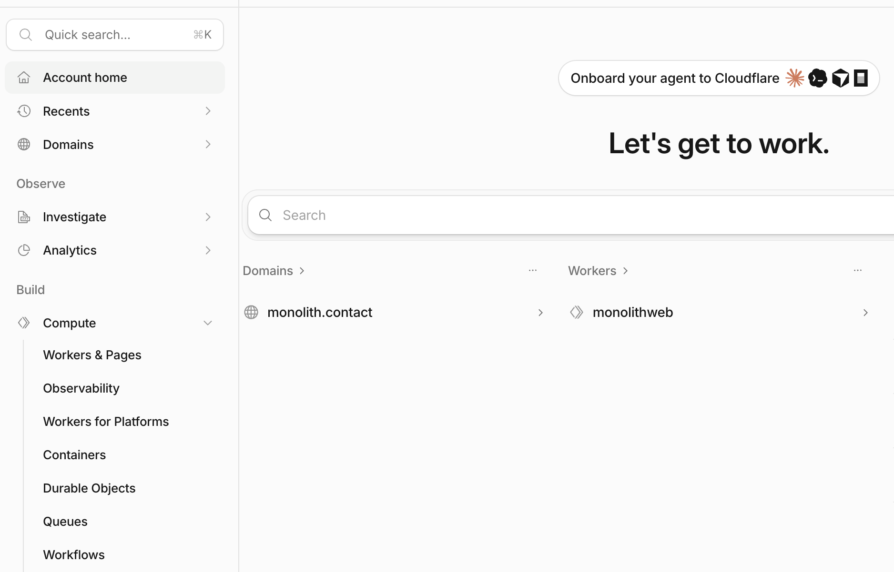
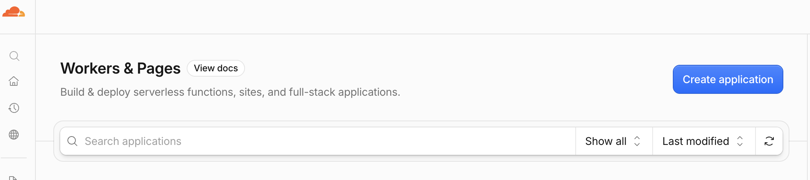
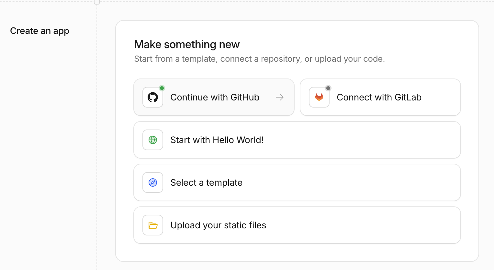
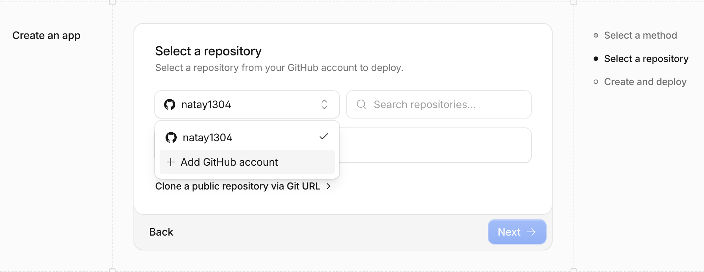

Зачем через GitHub? - чтобы сайт обновлялся сам каждый раз, когда сохраняешь изменения в код — без ручной загрузки файлов. Сейчас расскажу что там происходит.
Скоро сделаю подробные видео по всему процессу публикации сайта — следите за обновлениями.
01 Что такое деплой и зачем GitHub
Деплой — это просто публикация: перенос кода с вашего компьютера туда, где его увидит весь интернет. Заливка в интренет происходит через сайт Cloudflare(или его аналоги). GitHub - это посредник: место, где лежит код и откуда Cloudflare сам его забирает при каждом изменении.
Смысл связки «GitHub → Cloudflare»: вы один раз настраиваете связь, а дальше просто сохраняете код — публикация происходит сама, без захода в панель и ручной загрузки файлов. Всё это может делать за вас нейронка, которую вы уже используете для написания сайта.
Этот гайд — для сайта без своего сервера: просто HTML/CSS/JS, никакого кода, который бы что-то обрабатывал (форму, API и т.п.). У Cloudflare это называется Pages. Если у сайта есть серверная часть — процесс будет немного отличаться, это уже отдельная тема.
Важно
Интерфейс Cloudflare меняется быстро. Если у вас что-то выглядит по-другому — просто поменялась расстановка кнопок, но логика скорее всего сохранилась (репозиторий → настройки → деплой → домен).
02 Подготовка
Есть доступ к аккаунтам GitHub и Cloudflare - то есть зарегистрировались на обоих сервисах.
Код сайта уже лежит в репозитории (хранилище кода) на GitHub — публичном или приватном.
Проверь, что весь код этого проекта закоммичен и запушен в GitHub (git status),
и если нет — закоммить и запушь в ветку main.
Если в проекте ещё нет .gitignore — добавь под этот тип проекта
(исключи служебные файлы вроде node_modules, .env, .DS_Store).
Покажи вывод каждой команды и останови меня, если увидишь в коде
незакоммиченные ключи API или пароли.
Отдаёте нейронке (Claude Code, Cursor, Copilot и т.п.) с доступом к папке проекта и терминалу — это чисто подготовка кода, сами шаги в панели Cloudflare ниже всё равно делаете руками.
03 Пошагово: от репозитория до сайта в интернетах
Откройте раздел Workers & Pages. В панели dash.cloudflare.com, боковое меню → «Workers & Pages» — тут живут все проекты, которые публикуют код.

Build → Compute

Workers & Pages → кнопка Create application
Создайте проект и подключите репозиторий. Жмёте Create application — открывается единый экран «Make something new»: карточки Continue with GitHub, Connect with GitLab, Start with Hello World!, Select a template, Upload your static files.

Create application → «Make something new»
Жмёте Continue with GitHub: если GitHub ещё не подключён к аккаунту Cloudflare — запрос на OAuth-авторизацию (это разрешение даёте лично вы); если уже подключён — сразу открывается «Select a repository» — поиск, список репозиториев, ссылка «Clone a public repository via Git URL» для чужого публичного репозитория.

Continue with GitHub → «Select a repository»
Выбираете репозиторий (галочка на карточке) → Next.
Настройки проекта. Открывается экран «Set up your application»: ссылка на выбранный репозиторий, поле Project name (по нему формируется технический адрес — оно подставляется по имени репозитория и может случайно совпасть с именем другого вашего проекта, проверьте) и Build command (помечено Optional).
Дальнейшие поля зависят от того, что Cloudflare определит в репозитории: для чистой статики — что-то в духе framework preset / build output directory; если находит wrangler.jsonc — экран выглядит иначе (это уже не про статику, а про сайт с сервером).
Запустите первый деплой. Кнопка внизу экрана называется просто Deploy (либо просто пушите в подключённую ветку). Cloudflare сам скачивает код и публикует его — обычно минута-две. Появляется технический адрес *.pages.dev — черновой, для проверки.
Привяжите домен. Если домен уже в том же аккаунте Cloudflare — Custom Domains → добавить, DNS (связь доменного имени с вашем сайтом) настраивается автоматически. Если домен куплен в другом месте — нужно переключить nameservers на Cloudflare.
04 Как работает автообновление
С этого момента весь процесс публикации схлопывается в одну команду: git push — просто отправляете код в нужную ветку на GitHub. Технически при пуше происходит следующее:
Коммит в продакшен-ветку (обычно main) — Cloudflare собирает новую версию и сама делает её активным деплоем на боевом сайте.
Коммит в любую другую ветку (или пул-реквест) — Cloudflare тоже собирает сборку, но публикует отдельно, на своём preview-адресе, не трогая боевой сайт. Ссылка появляется прямо комментарием в пул-реквесте на GitHub.
Удобно даже для соло-разработки: можно запушить правку в отдельную ветку, посмотреть на живом preview, что ничего не сломалось, и только потом мержить в main.
05 Частые вопросы
Надо ли уметь программировать, чтобы это сделать?
Нет — сама настройка деплоя это клики в интерфейсе, а не код. Код нужен только чтобы сайт сделать.
А если я не хочу связываться с Git?
У Cloudflare есть прямая загрузка файлов (Direct Upload) без GitHub вообще — но тогда каждое обновление придётся заливать руками.
Что если деплой упал с ошибкой?
Deployments → View build history → конкретный деплой → Logs. Частые причины: опечатка в пути к файлу или неверный output directory.
Промпт для нейронки — разобрать ошибку деплоя
Деплой на Cloudflare упал с такой ошибкой в логах сборки (Deployments → Logs):
[вставьте сюда текст ошибки]
Проанализируй, в чём причина (опечатка в пути, неверный output directory,
отсутствующая зависимость и т.д.), и предложи конкретное исправление
в файлах этого репозитория.
Можно откатиться, если новая версия сломала сайт?
Да — в истории деплоев можно выбрать предыдущий успешный и снова сделать его активным (rollback), без отмены коммита в GitHub.
06 Что ещё умеет Cloudflare вокруг деплоя
Workers & Pages — общее устройство
Единый раздел панели Cloudflare, где живут все «проекты с кодом» — и классические статические сайты (Pages), и полноценные серверные функции (Workers). Для чистой статики нужна только часть Pages.
Тарифы Pages — что бесплатно, и где реальный лимит
Сама раздача статичных файлов посетителям — бесплатна и без ограничений по трафику/запросам, на любом плане. Платный тариф понадобится, только если на сайте появится серверный код.
Но есть отдельный лимит — не на посетителей, а на сами деплои:
Free: 500 билдов (деплоев) в месяц, 1 билд одновременно.
Paid (Pages Pro): 5 000 билдов в месяц, 5 одновременно; на Business — 20 000 и 20 одновременно.
Билд, который идёт дольше 20 минут, обрывается по таймауту — на обоих планах.
Каждый git push в подключённую ветку (продакшен или превью) — это один билд, так что считаются оба типа. 500 в месяц — это в среднем ~16 в день, для одного человека, который правит сайт не по 20 раз на дню, хватает с большим запасом.
Preview-деплои
Каждая ветка (и каждый пул-реквест) получает свой собственный живой адрес для проверки, отдельно от боевого сайта. Можно тестировать изменения на реальном адресе, не трогая боевой сайт.
Rollback
История деплоев хранит предыдущие успешные версии; активной можно сделать любую из них заново одним действием — без отмены коммитов в Git.
Логи и отладка
Логи сборки (Deployments → Logs) показывают, почему упала публикация. Логи выполнения (real-time, в самом проекте) — что происходит, когда уже опубликованный код отрабатывает на живом трафике.
Custom Domains и DNS
Если домен уже в том же аккаунте Cloudflare — привязка автоматическая. Если домен в другом месте (reg.ru и т.п.) — нужно переключить nameservers на Cloudflare.